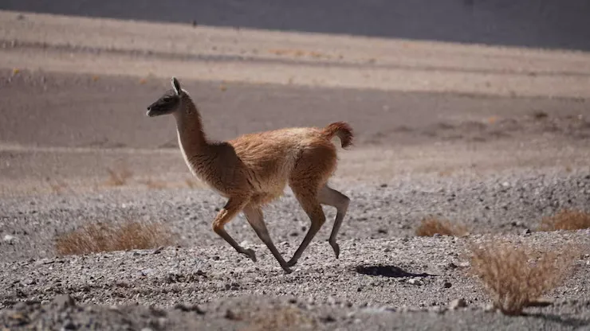
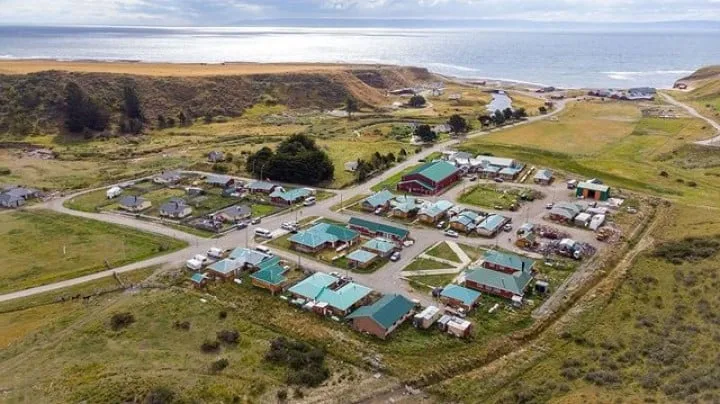

Guanaco Trail Running 2027: fecha, categorías y circuito
La Municipalidad de Timaukel confirmó las tres categorías —Chulengo, 14K y Bagual— de la primera edición, fijada para el 13 de febrero de 2027 entre Pampa Guanaco y Lago Blanco, en el sur de Tierra del Fuego chilena.

La primera edición del Guanaco Trail Running ya tiene fecha, categorías y trazado confirmados. La Municipalidad de Timaukel, en el corazón de la Tierra del Fuego chilena, precisó que la carrera se correrá el sábado 13 de febrero de 2027 entre Pampa Guanaco y Lago Blanco, y espera reunir a más de 300 corredores de Chile y Argentina en uno de los rincones menos transitados de la Patagonia.
El anuncio, que GLOBALpatagonia adelantó a comienzos de agosto, generó bastante ruido entre los trail runners de Magallanes y también del lado argentino: no hay antecedentes de una carrera de montaña organizada puertas adentro de Timaukel, una comuna de apenas 423 habitantes. Estas son las precisiones que fue confirmando el municipio desde entonces.
Tres carreras, un mismo paisaje
| Categoría | Distancia | Perfil |
|---|---|---|
| Chulengo | 3 km | Circuito corto, pensado para familias y debutantes en el trail |
| 14K | 14 km | Distancia intermedia, con tramos de bosque y turbera |
| Bagual | 30 km | El circuito completo: bosques, turba, cruces de río y desnivel entre Pampa Guanaco y Lago Blanco |

El guanaco, el animal que da nombre a la carrera y domina el paisaje de Timaukel.
Dónde queda Timaukel
Timaukel es una de las comunas más extensas y menos pobladas de Chile: ocupa el sur de la Isla Grande de Tierra del Fuego, sobre la Bahía Inútil. Su capital administrativa es Villa Cameron, aunque el municipio ya tiene aprobado el traslado a Pampa Guanaco —a 100 km, y el punto de largada de la carrera— para aprovechar mejor su ubicación turística. Timaukel no tiene la infraestructura de Punta Arenas o Puerto Natales —tiene, en cambio, bosque subantártico, turberas y una población de guanacos, cóndores y zorros que casi no se cruza con nadie.

La comuna de Timaukel, sobre la Bahía Inútil.
Se puede llegar por varios lados. Desde Chile, la vía más directa es por Porvenir, unos 150 km todo por tierra; desde Punta Arenas hay que cruzar el Estrecho de Magallanes en balsa por Primera Angostura (~25 minutos) y sumar otros 337 km de ruta. Desde Argentina la opción es más corta: por Río Grande, unos 80 km hasta el paso fronterizo Bellavista —abierto de 8 a 22 h, solo en temporada— y 12 km más hasta Pampa Guanaco, sin cruces de por medio.
Una fiesta detrás de la carrera
El Guanaco Trail Running no nace suelto: es la pieza deportiva de una apuesta turística más grande. La comuna presentó en septiembre de 2025 su temporada "Tierra del Fuego Indómita" en Punta Arenas, con la Tercera Fiesta del Guanaco como atracción central y la presencia del gobernador de Magallanes, Jorge Flies. El alcalde de Timaukel, Luis Barría Andrade, viene impulsando ese posicionamiento: la carrera busca consolidar a la comuna como destino de turismo deportivo ligado a la naturaleza.
Tierra del Fuego ya tenía vocación extrema
La apuesta de Timaukel no llega al vacío. Unos meses antes, en diciembre de 2025, la isla fue escenario de la tercera edición del Karukinka Gravel Race, la carrera de gravel por etapas más austral del mundo: 440 km en cuatro jornadas por la ruta Vicuña–Yendegaia, con apenas 40 cupos disponibles. Entre el gravel de resistencia y el trail running masivo, Tierra del Fuego empieza a construirse un calendario propio de deporte-aventura, en las antípodas del esquí de Bariloche o el trekking de El Chaltén.
Lo que todavía no está confirmado es el detalle fino: la Municipalidad de Timaukel no publicó aún el link de inscripción, el valor de la entrada ni la premiación de cada categoría, algo esperable a casi año y medio de la largada. Quienes quieran anotarse o hacer seguimiento pueden hacerlo por los canales oficiales de la comuna —munitimaukel.cl y la cuenta de Instagram @municipalidad.de.timaukel—, donde el municipio suele anunciar sus novedades. Para una comuna de 423 habitantes, sumar 300 corredores en un solo fin de semana no es un detalle menor —es, directamente, el evento más grande de su calendario.